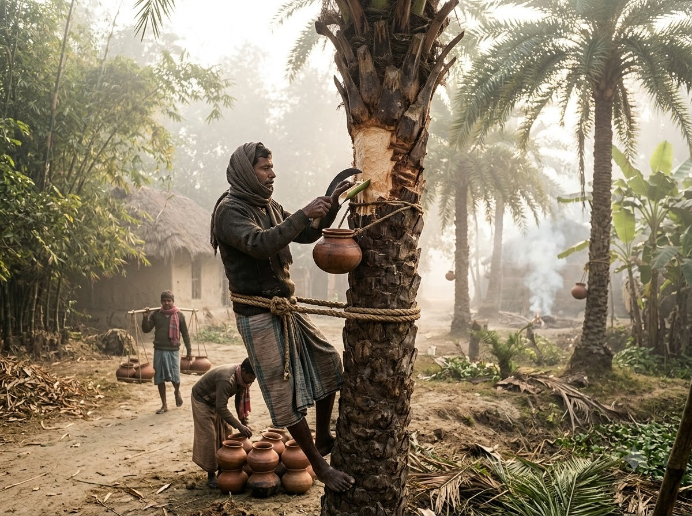

Our Craft & Origin
A winter delicacy you can’t rush
True Nolen Gur only exists when night temperatures drop. Skilled tappers climb wild khejur palms before sunrise, hanging clay pots to catch crystal-clear sap that turns into liquid amber over gentle wood flames.
- Single-Season Harvest (Nov – Feb)We never sell off-season stock. Once the winter harvest finishes, bookings close until next November.
- Pure & UnadulteratedNo cane jaggery mixing, no artificial essence—just pure concentrated date palm nectar.
- Made for Classics & EverydayElevate payesh, pithe-puli, sandesh, pancakes, or drizzle warm over ghee roti.